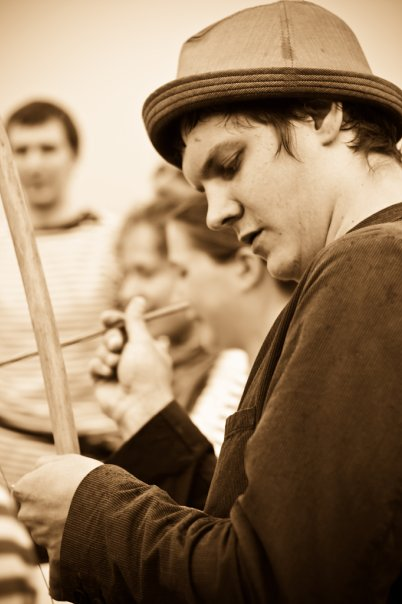
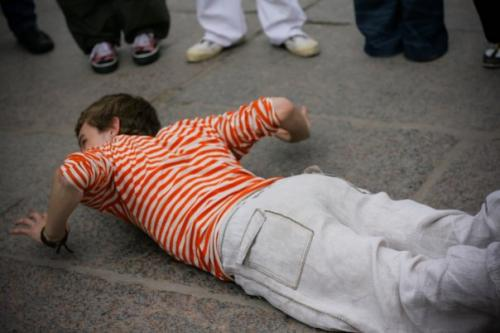

Стильные игры. Портовая Рода.
29 мая 2010 года
Стильные игры. Портовая Рода
Санкт-Петербург
Лучше в конце лета, чем осенью выложить фотографии с весенних «Стильных игр».
Это второе экспериментальное независимое стилизованное vadiacao в Санкт-Петербурге, которое мы решили сделать в виде портовой Роды. Вдохновились песнями о море, питерской Невой, группой Capoeiragem Marinheiro и позвали друзей-капоэйристов на Роду в тельняшках.
Около двух часов мы держали очень классную сильную энергию, благодаря всем нашим прекрасным участникам, чьи портреты можно найти под катом.
От себя скажу, что эта Рода была настоящим морем — она качала, она куда-то уносила далеко-далеко от берегов. Впервые за весь свой небольшой опыт в капоэйре я испытывала такие фантастические ощущения, когда во время игры не понимаешь, где батерия, где зрители, где земля, где небо, откуда идет звук — настолько захватывает энергия игры.
Очень приятно, что в этой Роде смогли встретиться многие люди, которые давно друг друга не видели и, возможно, и не увидели бы без этого мероприятия. Отдельное спасибо нашим московским гостям и добрым друзьям — Свете (Lua Branca), Руслану и Марии — они не поленились и примчались из столицы специально ради наших Стильных игр. И, надеюсь, не зря.
Роду устроили в самом „петербургском“ месте — в Петропавловской крепости
Руслан порадовал нас прекрасным пением, по которому мы уже соскучились
Lua Branca приехала и подарила нам не одну хорошую игру. Спасибо!
Прекрасная хитрая Мария зажигала в стиле «морячков»
Особенно радостно было видеть в одной батерии старых друзей — Compasso и Espada
Manhosa играла у нас за все Черное море!
Не море, а даже целый океан — Oceanica!


а это Сет, с него и требуйте видео))))
все фото — Botafogo